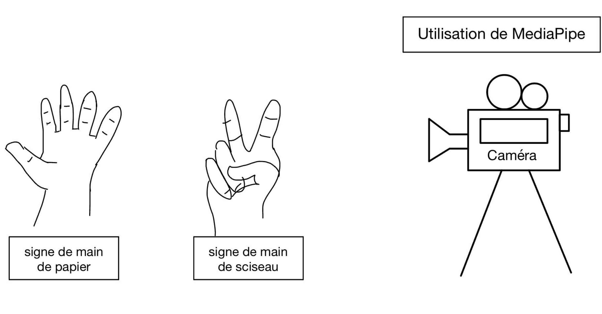

Dans mon expérimentation l'objet testé est une caméra, le modèle technique est ASUS 04081-00218700 c'est une caméra de type "USB2.0 FHD UVC WebCam". Elle permet de prendre non seulement des photos, mais surtout des vidéos de bonne qualité (1080p à 30fps). C'est justement cette fonctionnalité que je vais utiliser pour mon projet de jeu de pierre papier ciseaux.
Cette caméra a donc été fabriquée par ASUS, une entreprise Taiwanese de fabrication d'équipements informatiques. Asus ne fait pas que des caméras, il fabrique aussi des ordinateurs, des tablettes, des smartphones, etc. Un peu tout ce qui est dans le monde de la tech.
Il faut savoir que ce type de caméra est très universelle, avec les bons adaptateurs elle peut être utilisée sur n'importe quel ordinateur ou système électrique sur lequel on la connecte.
Pour la schématisation matérielle de la caméra, le processus de l'utilisation dans l'ordinateur se fait en 4 étapes :
Je vais expérimenter la qualité, la vitesse et la fiabilité de la caméra pour mon projet de jeu de pierre papier ciseaux. Voir si elle propose une qualité assez élever pour ce genre de précision.
Lancer le jeu en écrivant python rps_game.py dans le terminal, cliquer sur espace pour jouer, et observer la qualité de la caméra.
Résultat : On voit que la qualité de la caméra est assez bonne pour clairement voir les formes que les mains font.
Lancer le jeu en écrivant python rps_game.py dans le terminal, cliquer sur espace pour jouer et regarder si le système reconnaît chaque doigt.
Résultat : On voit que le programme voit chaque doigt individuellement, c'est un élément crucial pour le jeu.
Lancer le jeu en écrivant python rps_game.py dans le terminal, cliquer sur espace pour jouer, tester les trois différents choix de signe qui sont roche, papier et ciseaux.
Résultat : On voit que chaque signe est bien identifié par le programme et qu'il ne fait pas confusion entre les trois choix.
Lancer le jeu en écrivant python rps_game.py dans le terminal, cliquer sur espace pour jouer, le premier joueur choisit papier et le second joueur choisit ciseaux.
Résultat : On voit que le joueur qui a choisi ciseaux a gagné contre le joueur qui a choisi papier. Par contre, parfois
Je pense que les expérimentations ont été très concluante, le seul problème du programme est que parfois si la main est mal placée, il pense voir un feuille alors que c'est un ciseaux. C'est du au fait que les doigts sont superposées donc il prend pour acquis qu'il y en a plus de deux.
Pour l'utilisation de la caméra, j'utilise OpenCV qui permet de prendre la photo, ouvrir la caméra, la stocker et dessiner les lignes sur l'image. Je trouve que c'est une technologie très intéressante à utiliser, car elle est facile d'utilisation et elle laisse place à beaucoup de place pour la créativité.
Je trouve que MediaPipe c'est une technologie avec beaucoup de potentiel, dans mon cas d'utilisation elle utilise une minime partie de ses capacités. Je l'imagine dans la reconnaissance d'objets ou d'humain, dans un contexte militaire par exemple. Si cette technologie est combinée avec la caméra d'un drone militaire par exemple, il pourrait reconnaître les objets ou les humains et les suivre, ou même les détruire.
Par contre, je pense que pour l'instant MediaPipe est trop imprécis, dans des contextes sérieux ou l'erreur peux etre fatale, tu veux que ton programme n'aille aucune confusion au niveau de la précision, surtout si ça met la vie d'autres personnes en jeu.
Pour ce qui est de l'usage plus récréatif comme des jeux, des plateformes d'apprentissage etc... MediaPipe est clairement prêt pour être utilisé. Même si le programme présente encore des faiblesse, comme dit plus haut, il est reste tout à fait utilisable.
Le projet utilise la caméra ASUS 04081-00218700 pour capturer les images de la mains du joueurs et chaque doigts. En terme de longévité, tant que l'objectif de la caméra est intact et que la machine qui fait rouler le programme a de l'électricité le programme peut fonctionner.
Dans le temps, la résolution des caméras vas augmenter, mais tant que l'objectif de la caméra utilise envoie des images de qualité HD (1080p à 30fps), le programme peut fonctionner.
Ce qui est des technologies utilisées comme OpenCV et MediaPipe, des mises à jour ou des corrections de bugs peuvent être effectuées pour maintenir le programme en fonctionnement. Dans un futur lointain, ces mises à jour pourrait devenir si lourdes qu'il faudrait une machine plus puissant pour faire marcher le programme.
Lors des expérimentations, la caméra a eu un problème de reconnaissance des doigts si la main était en mouvement lors de la prise de la photo. Ce problème fait en sorte que le jeu ne comptabilise pas le signe choisi quand ça se produit.
Ce problème d'instabilité au niveau de la reconnaissance des doigts pourrait être encore plus problématique si d'autre joueurs y joue sans être au courant de ce problème. Si la caméra ne reconnaît pas le signe choisi, le jeu ne comptabilise pas le pointage et le joueur perd.
En plus, si la tech change dans le futur et que la manière dont les informations de MediaPipe sont traitées change le programme pourrait avoir de l'instabilité.
En terme d'efficacité on voit que si les mains sont trop superposées, les doigts trop loin de la caméra, mauvais éclairage ou même une caméra trop sale peut faire en sorte que le programme ne fonctionne plus. Ce qui laisse à désirer au niveau de l'efficacité générale de cette manière de faire.
Même si certain de ces facteurs ne tiennes pas directement de la tech, ça démontre néanmoins que le programme est pas assez fort pour plusieurs situations. Ce qui rend cette technique détection moins crédible pour des jeux plus compétitifs ou la confusion de programme peux mener à beaucoup de frustration pour les joueurs.
Le programme a été conçu pour avoir une bonne maintenabilité . En effet, le programme a été écrit de manière à être clair et structuré, ce qui le rend particulièrement facile à améliorer ou à corriger dans le cas d'un bug. Aussi, le code est divisé en fonctions pour que les modifications d'une partie n'affecte pas l'entièreté du code. En ce qui concerne l'utilisation, le programme est vraiment pratique, meme pas besoin de connexion internet. Tout ce qui faut c'est avoir le programme installé et la caméra connectée.
Pour le programme, j'ai dû choisir entre deux logiciels de tracking. Le premier étant MediaPipe et le deuxième étant OpenPose. MediaPipe c'est un logiciel prêt à l'emploi qui offre des solutions plus simples à incorporer dans la majorité des programmes, ce qui a été très utile pour le développement.
C'est vraiment user friendly, l'utilisation est intuitive et la documentation est bien faite donc même si je n'avais jamais touchée à ça avant, l'apprentissage a été rapide. Pour ce qui est de OpenPose, il s'agit d'un logiciel très précis, mais qui nécessite une configuration plus complexe et un courbe d'apprentissage plus longue. Je trouvais que c'était moins idéal contenu du temps limitée de ce projet. En contre partie, il donne plus de contrôle et de flexibilité.
J'ai au final choisi MediaPipe, que je trouvais plus adapté pour le projet et ça m'a permis de faire le projet dans le temps alloué.